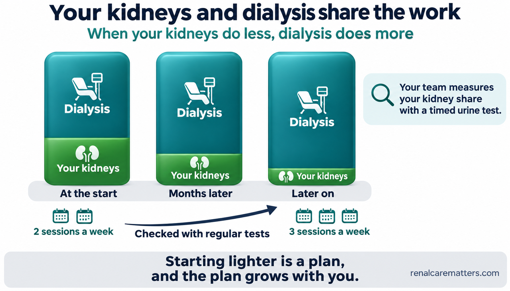
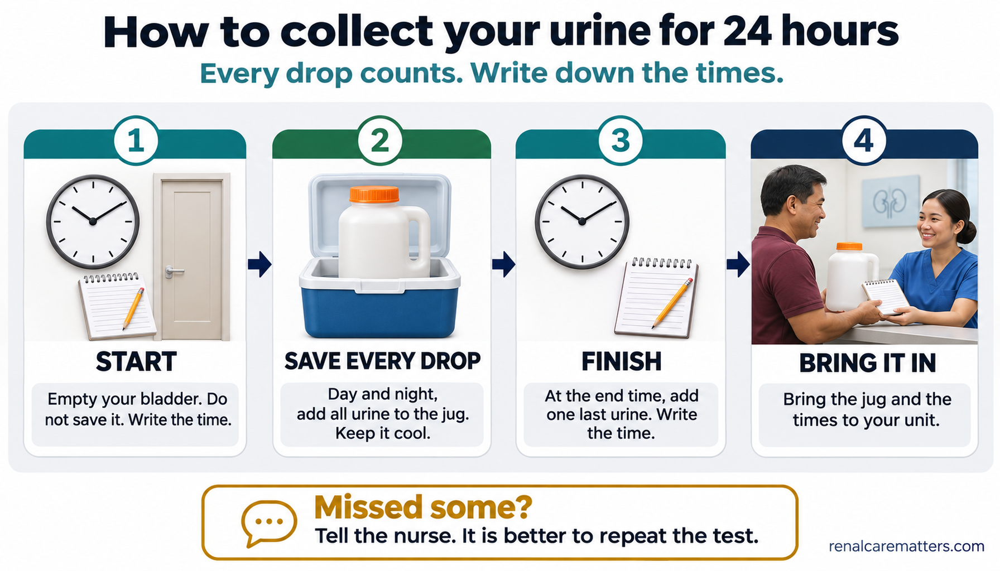
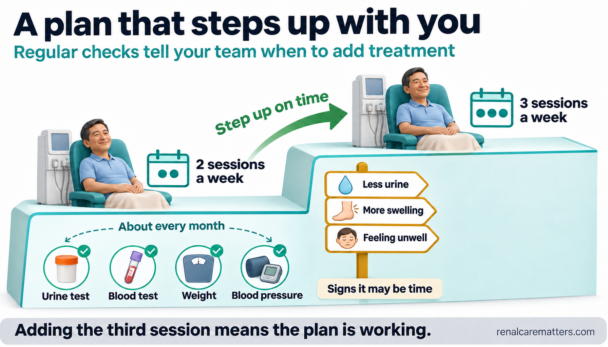
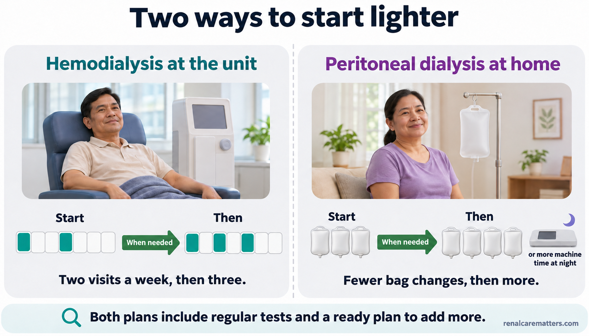
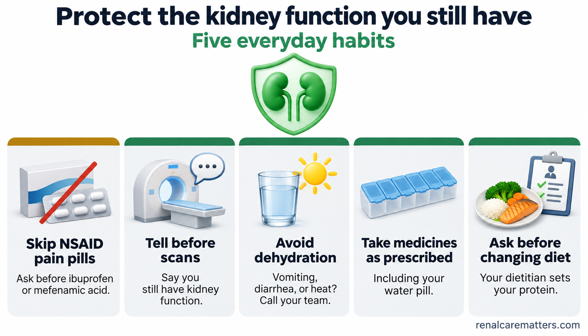
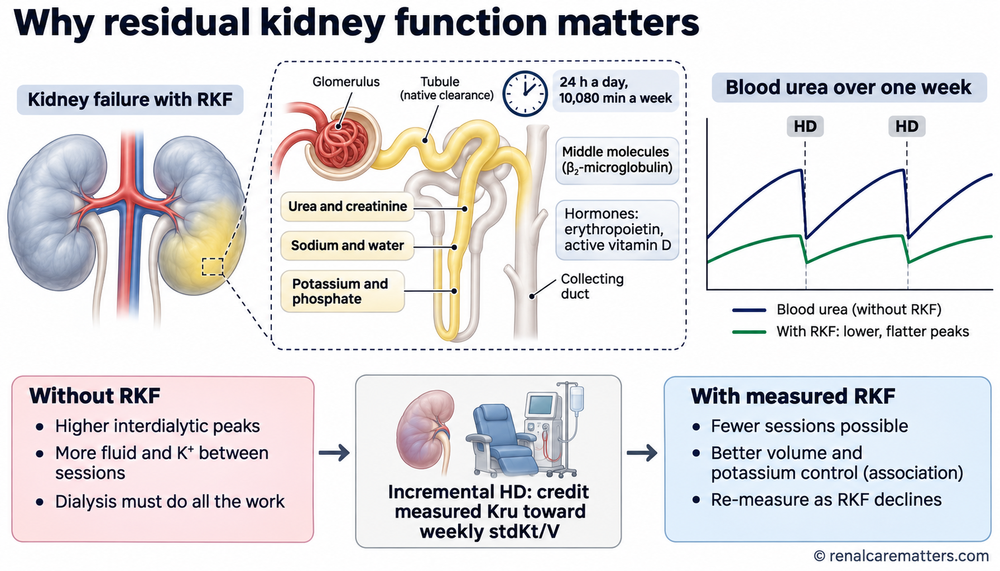
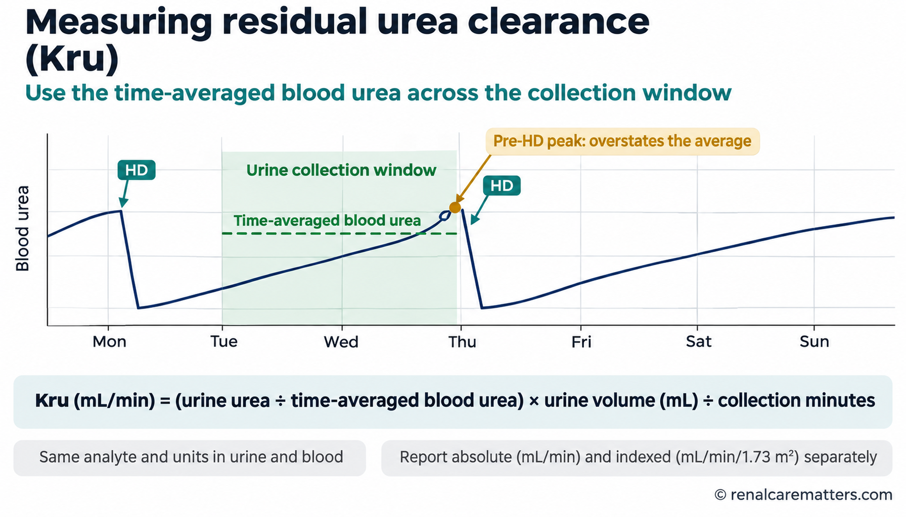
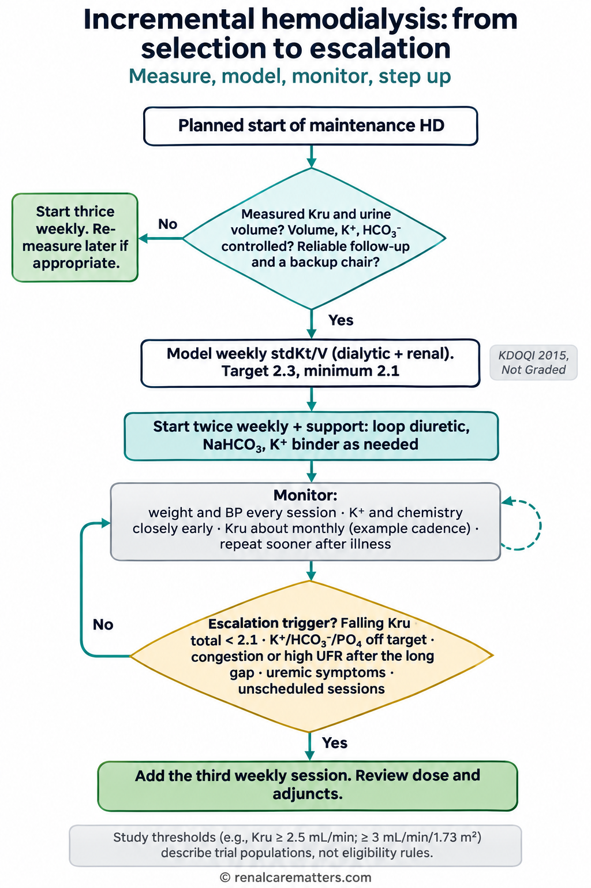
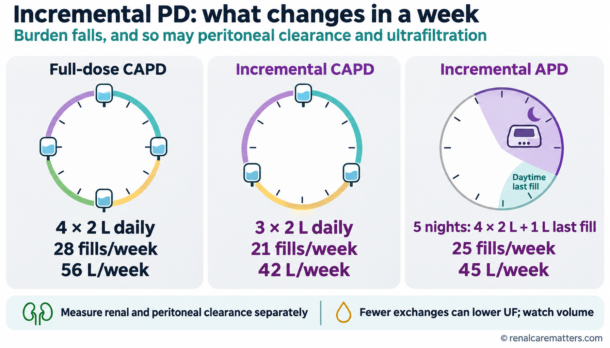

Starting dialysis with the kidney function you still havePagsisimula ng dialysis gamit ang natitirang gana ng iyong batoPagsugod sa dialysis gamit ang nabilin nga gana sa imong batoPamagumpisa ning dialysis gamit ing kakatagal a gana ning batu mu
Your kidneys can still remove some waste and water when you start dialysis. If tests show they still do enough of that work, your team may offer to start hemodialysis (HD) with two visits a week instead of three, or home peritoneal dialysis (PD) with fewer exchanges. This is called an incremental start. It always comes with repeat tests and a ready plan to add treatment when you need it. Until your team tells you otherwise, keep to your prescribed schedule.Kaya pa ng iyong mga bato na mag-alis ng kaunting dumi at tubig kapag nagsimula ka ng dialysis. Kung ipinapakita ng mga test na sapat pa ang nagagawa nila, maaaring ialok ng iyong team na simulan ang hemodialysis (HD) nang dalawang beses kada linggo sa halip na tatlo, o ang peritoneal dialysis (PD) sa bahay na may mas kaunting exchange. Tinatawag itong incremental na pagsisimula. Laging kasama nito ang paulit-ulit na test at nakahandang plano para dagdagan ang gamutan kapag kailangan mo na. Hangga't walang sinasabi ang iyong team, sundin ang iniresetang iskedyul.Makatangtang pa ang imong mga bato og gamay nga hugaw ug tubig inig sugod nimo sa dialysis. Kung ipakita sa mga test nga igo pa ang ilang mabuhat, mahimong itanyag sa imong team nga sugdan ang hemodialysis (HD) nga kaduha sa usa ka semana imbes katulo, o ang peritoneal dialysis (PD) sa balay nga mas gamay ang exchange. Gitawag kini nga incremental nga pagsugod. Kanunay kini adunay balik-balik nga test ug andam nga plano aron dugangan ang pagtambal kung kinahanglan na nimo. Samtang wala pay ingon ang imong team, sunda ang gireseta nga iskedyul.Kaya pa ra ning batu mu ing mamako kaunting dinat at danum nung mumpisa kang dialysis. Nung ipakit da ning test a sapat pa ing agawa ra, malyari nang ialuk ning team mu ing pamagumpisa ning hemodialysis (HD) a makaadwa king metung a dominggu nung e makatlu, o ing peritoneal dialysis (PD) king bale a mas kaunti ing exchange. Aus deti incremental a pamagumpisa. Kayabe na pane ing makailang test at ing makasadyang planu bang dagdagan ing panulu nung kailangan mu na. Anggang ala pang sabyan ing team mu, tuparan me ing meresetang iskedyul.
Healthy kidneys work all day and all night. They filter waste such as urea, remove extra water and salt, and keep potassium and acid at safe levels. When kidney failure arrives, this work does not stop at once: many people still make urine and still clear some waste for months or years. Doctors call this residual kidney function (RKF). Dialysis then takes over the share of the work that your kidneys can no longer do.Ang malulusog na bato ay nagtatrabaho buong araw at buong gabi. Sinasala nila ang dumi gaya ng urea, inaalis ang sobrang tubig at asin, at pinapanatiling ligtas ang antas ng potassium at acid. Kapag dumating ang kidney failure, hindi agad humihinto ang trabahong ito: marami pa ring umiihi at naglilinis ng kaunting dumi sa loob ng ilang buwan o taon. Tinatawag ito ng mga doktor na residual kidney function (RKF), o natitirang gana ng bato. Inaako ng dialysis ang bahagi ng trabaho na hindi na kaya ng iyong bato.Ang himsog nga bato nagtrabaho tibuok adlaw ug tibuok gabii. Gisala nila ang hugaw sama sa urea, gitangtang ang sobrang tubig ug asin, ug gipabiling luwas ang lebel sa potassium ug acid. Kung moabot ang kidney failure, dili dayon mohunong kini nga trabaho: daghan pa ang mangihi ug makalimpyo og gamay nga hugaw sulod sa pipila ka bulan o tuig. Gitawag kini sa mga doktor nga residual kidney function (RKF), o nabilin nga gana sa bato. Ang dialysis mao ang moako sa bahin sa trabaho nga dili na kaya sa imong bato.Ing malusug a batu magobra aldo at bengi. Salan dang ing dinat anti ning urea, ilako ing sobrang danum at asin, at panatilian dang ligtas ing antas ning potassium at acid. Nung dumatang ing kidney failure, e ya agad tumuknang ing obrang iti: dakal pa ing manimi at maglinis kaunting dinat king kilub da reng bulan o banwa. Aus deti ning doktor residual kidney function (RKF), o ing kakatagal a gana ning batu. Ing dialysis ing umaku king bage ning obra a e na kaya ning batu mu.
Think of it as two workers sharing one job. At the start, your own kidneys may still carry a real part of the load, so dialysis needs to carry less. Over months, the kidneys usually do less, so dialysis gradually does more. An incremental plan simply matches the amount of dialysis to the share your kidneys cannot cover, and it raises dialysis step by step as that share grows. The comparison has limits: your kidneys work continuously, while dialysis works in bursts, and your kidneys also make hormones and handle substances that dialysis removes poorly. That is one reason the team protects your remaining kidney function carefully.Isipin itong dalawang manggagawa na naghahati sa isang trabaho. Sa simula, maaaring kaya pa ng iyong bato ang tunay na bahagi ng trabaho, kaya mas kaunti ang kailangang gawin ng dialysis. Sa paglipas ng mga buwan, karaniwang humihina ang bato, kaya unti-unting dumarami ang ginagawa ng dialysis. Ang incremental na plano ay tinutugma ang dami ng dialysis sa bahaging hindi na kaya ng iyong bato, at dinadagdagan ito nang paisa-isang hakbang habang lumalaki ang bahaging iyon. May hangganan ang paghahambing: tuloy-tuloy ang trabaho ng bato, samantalang paminsan-minsan lang ang dialysis, at gumagawa rin ang bato ng mga hormone at nag-aalis ng mga sangkap na hirap alisin ng dialysis. Kaya maingat na pinoprotektahan ng team ang natitirang gana ng iyong bato.Hunahunaa kini nga duha ka mamumuo nga nagbahin sa usa ka trabaho. Sa sinugdanan, mahimong kaya pa sa imong bato ang tinuod nga bahin sa trabaho, mao nga mas gamay ang kinahanglan buhaton sa dialysis. Sa paglabay sa mga bulan, kasagaran mohuyang ang bato, mao nga anam-anam nga modaghan ang buhaton sa dialysis. Ang incremental nga plano nagtakdo sa gidaghanon sa dialysis sa bahin nga dili na kaya sa imong bato, ug gidugangan kini sa matag lakang samtang modako kana nga bahin. Adunay utlanan ang pagtandi: padayon ang trabaho sa bato, samtang panagsa ra ang dialysis, ug naghimo usab ang bato og mga hormone ug nagtangtang og mga butang nga lisod tangtangon sa dialysis. Busa amping kaayo nga ginapanalipdan sa team ang nabilin nga gana sa imong bato.Isipan me iti anti mong adwang manggagawa a maghati king metung a obra. King kapamumpisa, malyaring kaya pa ning batu mu ing tutung a bage ning obra, anya mas kaunti ing kailangan gawan ning dialysis. Kabang miliban ing bulan, karaniwan yang manyina ing batu, anya dahan-dahan yang dadagdag ing gagawan ning dialysis. Ing incremental a planu itugma na ing dakal ning dialysis king bage a e na kaya ning batu mu, at dagdagan ne metung-metung a pamakbang kabang lalaki ing bage a ita. Atin anggang ing pamanikuat: tuloy-tuloy ing obra ning batu, kabang paminsan-minsan mu ing dialysis, at gagawa ya murin ing batu kareng hormone at ilako na ring sangkap a mirap ilako ning dialysis. Anya maingat dang protektan ning team ing kakatagal a gana ning batu mu.

Your kidneys and dialysis share the work. Early on, your kidneys may still do a real share, so dialysis can do less. As that share shrinks, dialysis is increased step by step.Naghahati sa trabaho ang iyong bato at ang dialysis. Sa simula, maaaring may tunay pang bahagi ang iyong bato, kaya mas kaunti ang dialysis. Habang lumiliit ang bahaging iyon, dinadagdagan ang dialysis nang paisa-isang hakbang.Nagbahin sa trabaho ang imong bato ug ang dialysis. Sa sinugdanan, mahimong aduna pay tinuod nga bahin ang imong bato, mao nga mas gamay ang dialysis. Samtang mogamay kana nga bahin, gidugangan ang dialysis sa matag lakang.Maghati king obra ing batu mu at ing dialysis. King kapamumpisa, malyaring atin pang tutung a bage ing batu mu, anya mas kaunti ing dialysis. Kabang mitatagal ing bage a ita, dadagdagan de ing dialysis metung-metung a pamakbang.
- HD
- Hemodialysis
- PD
- Peritoneal dialysis
Hemodialysis: two visits, then three when neededHemodialysis: dalawang pagbisita, saka tatlo kapag kailanganHemodialysis: duha ka bisita, dayon tulo kung kinahanglanHemodialysis: adwang bisita, kaibat atlu nung kailangan
The usual incremental start is two sessions a week, often about four hours each, spaced apart (for example, Monday and Thursday). Your team adds the third weekly session when tests show your kidneys are doing less, or sooner if fluid, potassium, or symptoms become harder to control.Ang karaniwang incremental na simula ay dalawang session kada linggo, kadalasang mga apat na oras bawat isa, na may pagitan (halimbawa, Lunes at Huwebes). Idinadagdag ng iyong team ang ikatlong session kada linggo kapag ipinakita ng test na humihina ang iyong bato, o mas maaga kung mas mahirap nang kontrolin ang tubig, potassium, o mga sintomas.Ang kasagarang incremental nga pagsugod mao ang duha ka session matag semana, kasagaran mga upat ka oras matag usa, nga adunay gilay-on (pananglitan, Lunes ug Huwebes). Idugang sa imong team ang ikatulong session matag semana kung ipakita sa test nga mohuyang ang imong bato, o mas sayo kung mas lisod na kontrolon ang tubig, potassium, o mga sintomas.Ing karaniwang incremental a pamagumpisa ya ing adwang session king metung a dominggu, karaniwan mga apat a oras ing balang metung, a atin pamagitan (alimbawa, Lunes at Huwebes). Idagdag na ning team mu ing katlung session king dominggu nung ipakit ning test a manyina ing batu mu, o mas agad nung mas mirap neng kontrolan ing danum, potassium, o reng sintomas.
Peritoneal dialysis: a lighter home schedulePeritoneal dialysis: mas magaang iskedyul sa bahayPeritoneal dialysis: mas gaan nga iskedyul sa balayPeritoneal dialysis: mas magaan a iskedyul king bale
With PD, a lighter start can mean fewer bag exchanges per day (for example, three instead of four), a smaller fill volume, some days off, or a shorter night on the cycler machine. The PD team adds an exchange, more volume, or more cycler time as your needs grow.Sa PD, ang mas magaang simula ay maaaring mas kaunting palit ng bag kada araw (halimbawa, tatlo sa halip na apat), mas maliit na dami ng likido, ilang araw na pahinga, o mas maikling gabi sa cycler machine. Nagdadagdag ang PD team ng exchange, dami, o oras sa cycler habang lumalaki ang iyong pangangailangan.Sa PD, ang mas gaan nga pagsugod mahimong mas gamay nga ilis sa bag matag adlaw (pananglitan, tulo imbes upat), mas gamay nga gidaghanon sa likido, pipila ka adlaw nga pahulay, o mas mubo nga gabii sa cycler machine. Magdugang ang PD team og exchange, gidaghanon, o oras sa cycler samtang modako ang imong panginahanglan.King PD, ing mas magaan a pamagumpisa malyaring mas kaunting pamalit bag king aldo (alimbawa, atlu nung e apat), mas maliit a dakal ning likidu, aliwang aldo a pamagpaynawa, o mas maikling bengi king cycler machine. Magdagdag ya ing PD team exchange, dakal, o oras king cycler kabang lalaki ing kailangan mu.
Not the same as twice a week because of costHindi ito katulad ng dalawang beses kada linggo dahil sa gastosDili kini parehas sa kaduha matag semana tungod sa gastoE ya kapareu ning makaadwa king dominggu uli ning gastus
An incremental start is a medical plan built on measured kidney function, with scheduled tests and a ready third session. Twice-weekly hemodialysis chosen only because of money, transport, or a full unit, without measuring how much the kidneys still do, is a different situation and can leave a person under-treated. If cost or travel is the reason you cannot complete your schedule, tell your team. PhilHealth (the Philippine Health Insurance Corporation) now covers up to 156 hemodialysis sessions a year, which is three a week (see Costs and coverage).Ang incremental na simula ay isang medikal na plano na nakabatay sa nasukat na gana ng bato, may nakatakdang test at nakahandang ikatlong session. Iba ang dalawang beses kada linggong hemodialysis na pinili lamang dahil sa pera, pamasahe, o punong unit — nang hindi sinusukat kung gaano pa kalakas ang bato — at maaari itong mag-iwan sa tao na kulang sa gamutan. Kung gastos o biyahe ang dahilan kung bakit hindi mo matapos ang iskedyul, sabihin sa iyong team. Sakop na ngayon ng PhilHealth (Philippine Health Insurance Corporation) ang hanggang 156 na hemodialysis session kada taon, o tatlo kada linggo (tingnan ang Gastos at saklaw).Ang incremental nga pagsugod usa ka medikal nga plano nga nakabase sa nasukod nga gana sa bato, nga adunay gitakda nga test ug andam nga ikatulong session. Lahi ang kaduha matag semana nga hemodialysis nga gipili lamang tungod sa kuwarta, plete, o puno nga unit — nga wala gisukod kung unsa pa kakusog ang bato — ug mahimo kini nga magbilin sa tawo nga kulang sa pagtambal. Kung gasto o biyahe ang hinungdan nga dili nimo makompleto ang iskedyul, isulti sa imong team. Sakop na karon sa PhilHealth (Philippine Health Insurance Corporation) ang hangtod 156 ka hemodialysis session matag tuig, o tulo matag semana (tan-awa ang Gasto ug sakop).Ing incremental a pamagumpisa metung yang medikal a planu a makabatay king misukat a gana ning batu, atin takdang test at makasadyang katlung session. Aliwa ya ing makaadwang hemodialysis king dominggu a pinili mu uli ning pera, pamasai, o ing pupunu nang unit — a ali sinukat nung nukarin pa kalakas ing batu — at malyari nang iwan ing tau a kulang king panulu. Nung gastus o biyahe ing sangkan nung nanu e mu atapus ing iskedyul, sabyan me king team mu. Sakup na ngeni ning PhilHealth (Philippine Health Insurance Corporation) anggang 156 a hemodialysis session king metung a banwa, o atlu king dominggu (lawan ya ing Gastus at sakup).
How the team measures the work your kidneys still doPaano sinusukat ng team ang trabahong nagagawa pa ng iyong batoUnsaon pagsukod sa team ang trabaho nga mabuhat pa sa imong batoMakananu ya sukatan ning team ing obra a agawa pa ning batu mu
A single blood test such as creatinine or the estimated glomerular filtration rate (eGFR) is not enough once dialysis starts, because dialysis itself changes those numbers. The most reliable method is a timed urine collection: you collect all your urine over a set period, usually 24 hours (sometimes 48 hours) between dialysis sessions, and the team checks a blood sample timed to match. From the amount of urea in your urine compared with your blood, the team calculates your residual kidney urea clearance (Kru), written in milliliters per minute (mL/min).Hindi sapat ang iisang blood test gaya ng creatinine o estimated glomerular filtration rate (eGFR) kapag nagsimula na ang dialysis, dahil binabago mismo ng dialysis ang mga numerong iyon. Ang pinakamaaasahang paraan ay ang timed urine collection: iipunin mo ang lahat ng iyong ihi sa isang takdang panahon, kadalasang 24 oras (minsan 48 oras) sa pagitan ng mga session, at susuriin ng team ang dugo na kinuha sa tamang oras. Mula sa dami ng urea sa ihi kumpara sa dugo, kinukuwenta ng team ang iyong residual kidney urea clearance (Kru), na isinusulat sa mililitro kada minuto (mL/min).Dili igo ang usa ka blood test sama sa creatinine o estimated glomerular filtration rate (eGFR) kung nagsugod na ang dialysis, tungod kay ang dialysis mismo nag-usab sa maong mga numero. Ang labing kasaligan nga paagi mao ang timed urine collection: tigumon nimo ang tanan nimong ihi sulod sa usa ka gitakda nga panahon, kasagaran 24 ka oras (usahay 48 ka oras) taliwala sa mga session, ug susihon sa team ang dugo nga gikuha sa saktong oras. Gikan sa gidaghanon sa urea sa ihi itandi sa dugo, kuwentahon sa team ang imong residual kidney urea clearance (Kru), nga gisulat sa mililitro matag minuto (mL/min).E sapat ing metung a blood test anti ning creatinine o estimated glomerular filtration rate (eGFR) nung mekapamumpisa na ing dialysis, uling ing dialysis mismu ing manalili kareng numeru a reta. Ing pekamaasahan a paralan ya ing timed urine collection: ipun mu ing sablang ini mu king metung a takdang panaun, karaniwan 24 oras (minsan 48 oras) king pamagitan da reng session, at surian ning team ing daya a mekuwa king tamang oras. Manibat king dakal ning urea king ini mu nung ikuat king daya, kuwentan ning team ing residual kidney urea clearance (Kru) mu, a isulat king mililitro king metung a minutu (mL/min).
The amount of urine you make each day also matters, because it tells the team how much water and salt your kidneys still remove. But urine volume alone can mislead: some people pass a good amount of dilute urine while clearing little waste. That is why the team looks at both the measured clearance and the volume, and watches how they change over time rather than relying on one reading.Mahalaga rin ang dami ng ihi mo kada araw, dahil sinasabi nito sa team kung gaano karaming tubig at asin ang naaalis pa ng iyong bato. Pero maaaring makalinlang ang dami ng ihi lamang: may mga taong maraming umiihi ng malabnaw na ihi pero kaunting dumi lang ang naaalis. Kaya tinitingnan ng team ang dalawa — ang nasukat na clearance at ang dami — at binabantayan kung paano sila nagbabago sa paglipas ng panahon sa halip na umasa sa iisang resulta.Importante usab ang gidaghanon sa imong ihi matag adlaw, tungod kay kini nagsulti sa team kung pila pa ka tubig ug asin ang matangtang sa imong bato. Apan mahimong makapahisalaag ang gidaghanon sa ihi lamang: aduna'y mga tawo nga daghan og ihi nga lasaw apan gamay ra nga hugaw ang matangtang. Busa tan-awon sa team ang duha — ang nasukod nga clearance ug ang gidaghanon — ug bantayan kung giunsa kini pag-usab sa paglabay sa panahon imbes nga mosalig sa usa ka resulta.Mayalaga mu rin ing dakal ning ini mu king aldo, uling sabyan na king team nung pilan pang danum at asin ing ilako ning batu mu. Pero malyaring makapalinlang ing dakal ning ini bukud: atin taung dakal ing ini a malabnaw pero kaunting dinat mu ing ilako. Anya lawan ning team ing adwa — ing misukat a clearance at ing dakal — at bantayan nung makananu lang manalili kabang miliban ing panaun, nung e manalig king metung a resulta.

A timed urine collection in four steps: start with an empty bladder, save every drop, finish at the exact end time, and bring the container with the written times.Ang timed urine collection sa apat na hakbang: magsimula nang walang laman ang pantog, ipunin ang bawat patak, tapusin sa eksaktong oras, at dalhin ang lalagyan kasama ang isinulat na mga oras.Ang timed urine collection sa upat ka lakang: sugdi nga walay sulod ang pantog, tigumon ang matag tulo, tapusa sa eksaktong oras, ug dad-a ang sudlanan uban ang gisulat nga mga oras.Ing timed urine collection king apat a pamakbang: mumpisa ka a ala nang lamán ing pantug, ipun me ing balang patak, tapusan me king eksaktung oras, at darwan me ing lalagyan kayabe ing pepasulat a oras.
Getting the collection rightPaano gawin nang tama ang pag-iiponUnsaon pagbuhat sa husto sa pagtigomMakananu yang gawan a tama ing pamagipun
- Start: at the agreed start time, pass urine into the toilet and do not save it. Write down the time.Simula: sa napagkasunduang oras, umihi sa inidoro at huwag itong iipunin. Isulat ang oras.Sugod: sa giuyonan nga oras, pangihi sa kasilyas ug ayaw kini tigoma. Isulat ang oras.Mumpisa: king pepagkasundu dang oras, manimi ka king inidoru at e me ipun. Isulat me ing oras.
- Collect everything: every time you pass urine during the period, including at night, add it to the container. Keep it closed and cool, away from sunlight.Ipunin lahat: sa bawat pag-ihi sa loob ng panahong iyon, kasama sa gabi, idagdag sa lalagyan. Panatilihing nakasara at malamig, malayo sa araw.Tigoma tanan: sa matag pangihi sulod sa maong panahon, apil sa gabii, idugang sa sudlanan. Pabilina nga sirado ug bugnaw, layo sa adlaw.Ipun me ngan: king balang manimi ka king kilub ning panaun a ita, kayabe king bengi, idagdag me king lalagyan. Panatilian yang makasara at malamig, marayu king aldo.
- Finish: at the exact end time, pass urine one last time and add it. Write down the end time.Tapos: sa eksaktong oras ng pagtatapos, umihi sa huling pagkakataon at idagdag ito. Isulat ang oras ng pagtatapos.Human: sa eksaktong oras sa pagtapos, pangihi sa kataposang higayon ug idugang kini. Isulat ang oras sa pagtapos.Tapus: king eksaktung oras ning pamanapus, manimi ka king tauling pamanyaya at idagdag me. Isulat me ing oras ning pamanapus.
- Tell the truth about misses: if you forgot to save some urine, say so. A missed portion makes the result look worse than it is, and the team would rather repeat the test than act on a wrong number.Sabihin ang totoo kung may nakaligtaan: kung nakalimutan mong ipunin ang ilang ihi, sabihin ito. Ang nakaligtaang bahagi ay nagpapamukhang mas masama ang resulta, at mas gusto ng team na ulitin ang test kaysa kumilos batay sa maling numero.Isulti ang tinuod kung aduna'y nalimtan: kung nalimtan nimo pagtigom ang pipila ka ihi, isulti kini. Ang nalimtan nga bahin magpakita nga mas grabe ang resulta, ug mas gusto sa team nga sublion ang test kaysa molihok base sa sayop nga numero.Sabyan me ing tutu nung atin ka metagumpakan: nung melingwan mung ipun ing aliwang ini, sabyan me. Ing bage a melaktawan mapalyaring makalako a mas marok ing resulta, at mas buri ning team ing ulitan ing test nung kumilus batay king malating numeru.
- Blood test timing: the unit decides when to take the matching blood sample. Follow their instructions; an ordinary blood test taken on a random day cannot replace it.Oras ng blood test: ang unit ang nagpapasya kung kailan kukunin ang katugmang sample ng dugo. Sundin ang kanilang tagubilin; hindi ito mapapalitan ng ordinaryong blood test sa ibang araw.Oras sa blood test: ang unit ang modesisyon kung kanus-a kuhaon ang katugma nga sample sa dugo. Sunda ang ilang instruksyon; dili kini mapulihan sa ordinaryo nga blood test sa laing adlaw.Oras ning blood test: ing unit ing mamagpasya nung kapilan kuwanan ing makatugmang sample ning daya. Tuparan me ing tuturu ra; e ya mapalitan ning ordinaryung blood test king aliwang aldo.
Who may discuss an incremental start with the teamSino ang maaaring makipag-usap sa team tungkol sa incremental na simulaKinsa ang mahimong makigsulti sa team bahin sa incremental nga pagsugodNinu ing malyaring makisabi king team tungkul king incremental a pamagumpisa
There is no single number that makes someone eligible. The team weighs several things together, and the decision is shared with you. In general, an incremental start is discussed when most of the following are true:Walang iisang numero na nagpapasya kung sino ang puwede. Sabay-sabay na tinitimbang ng team ang ilang bagay, at kasama ka sa pagpapasya. Sa pangkalahatan, pinag-uusapan ang incremental na simula kapag totoo ang karamihan sa mga sumusunod:Walay usa ka numero nga magdesisyon kung kinsa ang mahimo. Dungan nga timbangon sa team ang pipila ka butang, ug apil ka sa pagdesisyon. Sa kinatibuk-an, hisgotan ang incremental nga pagsugod kung tinuod ang kadaghanan sa mosunod:Ala yang metung a numeru a mamagpasya nung ninu ing malyari. Sabay-sabay dang timbangan ning team ing aliwang bage, at kayabe ka king pamagpasya. King pangkabilugan, pisabyan ing incremental a pamagumpisa nung tutu ing kalaktan karing makatuki:
- You are starting planned maintenance dialysis, not emergency dialysis for a dangerous problem.Nagsisimula ka ng planadong maintenance dialysis, hindi emergency dialysis dahil sa mapanganib na problema.Nagsugod ka og giplano nga maintenance dialysis, dili emergency dialysis tungod sa delikado nga problema.Mumpisa kang miplanung maintenance dialysis, e emergency dialysis uli ning delikadung problema.
- A timed urine test shows your kidneys still clear a meaningful amount of waste, and you still pass a fair amount of urine.Ipinapakita ng timed urine test na may makabuluhang dami pang dumi na naaalis ng iyong bato, at may sapat ka pang ihi.Gipakita sa timed urine test nga aduna pay igong gidaghanon sa hugaw nga matangtang sa imong bato, ug aduna ka pay igo nga ihi.Ipakit ning timed urine test a atin pang makabuluhang dakal a dinat a ilako ning batu mu, at atin ka pang sapat a ini.
- Your weight gain between sessions, blood pressure, potassium, and acid level are under control.Kontrolado ang pagtaas ng timbang sa pagitan ng session, presyon ng dugo, potassium, at antas ng acid.Kontrolado ang pagsaka sa timbang taliwala sa mga session, presyon sa dugo, potassium, ug lebel sa acid.Kontrolado ing pamagtaas ning timbang king pamagitan da reng session, presyon ning daya, potassium, at antas ning acid.
- You feel reasonably well: appetite is fair, and nausea, itching, or weakness are not severe.Medyo maayos ang pakiramdam mo: maayos ang gana sa pagkain, at hindi malala ang pagduduwal, pangangati, o panghihina.Medyo maayo ang imong pamati: maayo ang gana sa pagkaon, ug dili grabe ang kasukaon, katol, o kaluya.Medyu mayap ing pamakiramdam mu: mayap ing gana king pamangan, at e malala ing pamagduwal, kati, o pamanyina.
- You can do the urine collections, come to every check, and reach the team quickly on days without dialysis.Kaya mong gawin ang pag-iipon ng ihi, dumalo sa bawat check, at makontak agad ang team sa mga araw na walang dialysis.Kaya nimo buhaton ang pagtigom sa ihi, motambong sa matag check, ug makontak dayon ang team sa mga adlaw nga walay dialysis.Kaya mung gawan ing pamagipun ini, dumalo king balang check, at makontak agad ing team kareng aldo a ala kang dialysis.
- The unit can add a third session promptly when it is needed, and you are willing to accept it.Kaya ng unit na magdagdag agad ng ikatlong session kapag kailangan, at handa kang tanggapin ito.Kaya sa unit nga modugang dayon og ikatulong session kung kinahanglan, ug andam ka nga dawaton kini.Kaya ning unit ing magdagdag agad katlung session nung kailangan, at sadya kang tanggapan ya.
When a full schedule is safer from the startKapag mas ligtas ang buong iskedyul mula sa simulaKung mas luwas ang bug-os nga iskedyul gikan sa sinugdananNung mas ligtas ing buung iskedyul manibat king kapamumpisa
A lighter start is usually not suitable if you have fluid in the lungs or severe swelling, dangerously high potassium or acid in the blood, severe uremic symptoms (such as confusion, vomiting, or chest pain from inflamed heart lining), very little urine, or no reliable way to be monitored. Your team may still revisit the idea later if things settle.Karaniwang hindi angkop ang mas magaang simula kung may tubig sa baga o matinding pamamaga, mapanganib na taas ng potassium o acid sa dugo, malalang uremic na sintomas (gaya ng pagkalito, pagsusuka, o sakit ng dibdib mula sa pamamaga ng balot ng puso), napakakaunting ihi, o walang maaasahang paraan ng pagsubaybay. Maaari pa ring balikan ng team ang ideya kapag umayos ang kalagayan.Kasagaran dili haom ang mas gaan nga pagsugod kung aduna'y tubig sa baga o grabe nga paghubag, delikado nga taas sa potassium o acid sa dugo, grabe nga uremic nga sintomas (sama sa kalibog, pagsuka, o sakit sa dughan gikan sa paghubag sa putos sa kasingkasing), gamay kaayo nga ihi, o walay kasaligan nga paagi sa pagbantay. Mahimo pa nga balikan sa team ang ideya kung mamaayo ang kahimtang.Karaniwan e bagay ing mas magaan a pamagumpisa nung atin danum king baga o malalang pamamaga, delikadung tagal ning potassium o acid king daya, malalang uremic a sintomas (anti ning pamagkalitu, pamagsuka, o sakit king dibdib manibat king pamamaga ning balut ning pusu), kaunti dapat a ini, o ala kang maasahang paralan ning pamagbantay. Malyari pa neng balikan ning team ing isip nung mayap na ing kalagayan.
What the team watches, and whenAno ang binabantayan ng team, at kailanUnsa ang bantayan sa team, ug kanus-aNanu ing bantayan ning team, at kapilan
An incremental plan is only as safe as its monitoring. Your kidney function will usually fall over time, sometimes slowly and sometimes quickly after an illness. The checks below are how the team catches that change early, before it shows up as swelling, breathlessness, or a dangerous potassium level.Kasing-ligtas lang ng pagbabantay ang incremental na plano. Karaniwang bumababa ang gana ng iyong bato sa paglipas ng panahon — minsan dahan-dahan, minsan mabilis pagkatapos ng sakit. Ang mga check sa ibaba ang paraan ng team para mahuli agad ang pagbabago, bago pa ito lumabas bilang pamamaga, hirap sa paghinga, o mapanganib na potassium.Ang incremental nga plano luwas lamang sama sa pagbantay niini. Kasagaran mokunhod ang gana sa imong bato sa paglabay sa panahon — usahay hinay, usahay paspas human sa usa ka sakit. Ang mga check sa ubos mao ang paagi sa team aron masakpan dayon ang kausaban, sa dili pa kini mogawas isip paghubag, lisod nga pagginhawa, o delikado nga potassium.Ing incremental a planu kasing-ligtas mu ning pamagbantay kaniti. Karaniwan yang bababa ing gana ning batu mu kabang miliban ing panaun — minsan dahan-dahan, minsan agad kaibat ning sakit. Ing reng check king lalam ing paralan ning team bang aklasan agad ing pamanalili, bayu ya pa lumwal anti mong pamamaga, mirap a pamangisnawa, o delikadung potassium.
Timed urine test, blood tests, weight, blood pressure, appetite, and a plan for who to call.Timed urine test, blood test, timbang, presyon, gana sa pagkain, at plano kung sino ang tatawagan.Timed urine test, blood test, timbang, presyon, gana sa pagkaon, ug plano kung kinsa ang tawagan.Timed urine test, blood test, timbang, presyon, gana king pamangan, at planu nung ninu ing tawagan.
Closer checks of potassium, acid, weight gain, and blood pressure at every session.Mas malapit na check ng potassium, acid, pagtaas ng timbang, at presyon sa bawat session.Mas duol nga check sa potassium, acid, pagsaka sa timbang, ug presyon sa matag session.Mas malapit a check ning potassium, acid, pamagtaas timbang, at presyon king balang session.
Repeat urine test and labs. Many units recheck about once a month; your unit sets the exact timing.Ulitin ang urine test at lab. Maraming unit ang nagre-recheck mga minsan kada buwan; ang unit mo ang magtatakda ng eksaktong oras.Sublion ang urine test ug lab. Daghang unit ang mo-recheck mga kausa matag bulan; ang imong unit ang motakda sa eksaktong oras.Ulitan ing urine test at lab. Dakal a unit ing mag-recheck mga misan king bulan; ing unit mu ing mamagtakda king eksaktung oras.
After a hospital stay, infection, dehydration, or a fall in urine output: test again sooner.Pagkatapos ma-ospital, magkaimpeksyon, ma-dehydrate, o bumaba ang ihi: mag-test ulit nang mas maaga.Human ma-ospital, magka-impeksyon, ma-dehydrate, o mokunhod ang ihi: mag-test pag-usab nga mas sayo.Kaibat ma-ospital, magka-impeksyun, ma-dehydrate, o bumaba ing ini: mag-test pasibayu a mas agad.

The plan is a staircase, not a fixed level. Regular checks tell the team when it is time to step up from two sessions to three, or to add a PD exchange.Hagdan ang plano, hindi nakapirming antas. Sinasabi ng regular na check sa team kung oras nang umakyat mula dalawa hanggang tatlong session, o magdagdag ng PD exchange.Hagdan ang plano, dili pirmi nga lebel. Ang regular nga check magsulti sa team kung panahon na nga mosaka gikan sa duha ngadto sa tulo ka session, o modugang og PD exchange.Adan ing planu, e pirmeng antas. Sabyan ning regular a check king team nung oras na bang mukyat manibat adwa anggang atlung session, o magdagdag PD exchange.
- PD
- Peritoneal dialysis
Call your dialysis team promptly ifTawagan agad ang iyong dialysis team kungTawga dayon ang imong dialysis team kungTawagan me agad ing dialysis team mu nung
your urine output drops suddenly; your weight or swelling rises quickly between sessions; you develop worsening nausea, vomiting, or poor appetite; you feel unusually weak or itchy; or you are starting a new medicine, including pain relievers. On PD, call the PD unit at once for cloudy drained fluid or new belly pain, because these can mean peritonitis.biglang bumaba ang iyong ihi; mabilis na tumaas ang timbang o pamamaga sa pagitan ng session; lumalala ang pagduduwal, pagsusuka, o kawalan ng gana; kakaibang panghihina o pangangati; o magsisimula ka ng bagong gamot, kasama ang pain reliever. Sa PD, tawagan agad ang PD unit kung malabo ang inilabas na likido o may bagong sakit sa tiyan, dahil maaaring peritonitis ito.kalit nga mokunhod ang imong ihi; paspas nga mosaka ang timbang o paghubag taliwala sa mga session; mograbe ang kasukaon, pagsuka, o kawalay gana; talagsaon nga kaluya o katol; o magsugod ka og bag-ong tambal, apil ang pain reliever. Sa PD, tawga dayon ang PD unit kung lubog ang gipagawas nga likido o aduna'y bag-ong sakit sa tiyan, tungod kay mahimong peritonitis kini.biglang bumaba ing ini mu; agad a tumagal ing timbang o pamamaga king pamagitan da reng session; lalala ing pamagduwal, pamagsuka, o ala nang gana; kakaibang pamanyina o kati; o mumpisa kang bayung gamut, kayabe ing pain reliever. King PD, tawagan me agad ing PD unit nung malabu ing pelwal a likidu o atin bayung sakit king atian, uling malyaring peritonitis ya.
Go to the emergency room forPumunta sa emergency room kung mayAdto sa emergency room kung aduna'yMunta ka king emergency room nung atin
severe shortness of breath, chest pain, fainting, a very slow or irregular heartbeat, muscle weakness that is spreading, or new confusion. Do not wait for your next scheduled session.matinding hirap sa paghinga, sakit ng dibdib, pagkahimatay, napakabagal o hindi regular na tibok ng puso, kumakalat na panghihina ng kalamnan, o bagong pagkalito. Huwag nang hintayin ang susunod na session.grabe nga kalisod sa pagginhawa, sakit sa dughan, pagkaluya hangtod mawad-an og panimuot, hinay kaayo o dili regular nga pitik sa kasingkasing, mikaylap nga kaluya sa kaunuran, o bag-ong kalibog. Ayaw na hulata ang sunod nga session.malalang mirap a pamangisnawa, sakit king dibdib, pamagkapanaw, mabagal dapat o e regular a pitik ning pusu, kumakalat a pamanyina ning laman, o bayung pamagkalitu. E mu ne paninayan ing susunod a session.
Stepping up is part of the plan, not a failureBahagi ng plano ang pag-akyat, hindi ito pagkabigoBahin sa plano ang pagsaka, dili kini kapakyasanBage ning planu ing pamukyat, e ya pamagkabigu
Most people on an incremental plan will eventually need more dialysis, because kidney function usually keeps declining. In the largest randomized trial so far, about one in five people who started with two hemodiafiltration sessions a week moved to three within a year, mostly because their measured kidney clearance had fallen. Stepping up on time is the plan working as designed.Karamihan sa nasa incremental na plano ay mangangailangan din ng mas maraming dialysis, dahil karaniwang patuloy na humihina ang bato. Sa pinakamalaking randomized trial sa ngayon, mga isa sa bawat lima na nagsimula sa dalawang hemodiafiltration session kada linggo ang lumipat sa tatlo sa loob ng isang taon, karamihan dahil bumaba ang nasukat na clearance ng bato. Ang napapanahong pag-akyat ay ang plano na gumagana ayon sa disenyo.Kadaghanan sa anaa sa incremental nga plano manginahanglan gihapon og mas daghang dialysis, tungod kay kasagaran padayon nga mohuyang ang bato. Sa pinakadakong randomized trial karon, mga usa sa matag lima nga nagsugod sa duha ka hemodiafiltration session matag semana ang mibalhin sa tulo sulod sa usa ka tuig, kasagaran tungod kay mikunhod ang nasukod nga clearance sa bato. Ang husto sa oras nga pagsaka mao ang plano nga molihok sumala sa disenyo.Ing kalaktan a atyu king incremental a planu mangailangan mu rin mas dakal a dialysis, uling karaniwan yang patuloy a manyina ing batu. King pekamaragul a randomized trial ngeni, mga metung king balang limang mumpisa king adwang hemodiafiltration session king dominggu ing milipat king atlu king kilub ning metung a banwa, kalaktan uling bimaba ing misukat a clearance ning batu. Ing napanaunan a pamukyat ya ing planu a gagana agpang king disenyu.
On hemodialysisSa hemodialysisSa hemodialysisKing hemodialysis
The main step is adding the third weekly session. Separately, your doctor may adjust session length, blood flow, or the dialyzer to fine-tune the dose. You may also be asked to take a water pill (diuretic), bicarbonate tablets, or a potassium binder to support the twice-weekly plan.Ang pangunahing hakbang ay ang pagdagdag ng ikatlong session kada linggo. Bukod dito, maaaring ayusin ng doktor ang haba ng session, daloy ng dugo, o ang dialyzer para mapino ang dosis. Maaari ka ring pinainom ng pampaihi (diuretic), bicarbonate tablet, o potassium binder para suportahan ang planong dalawang beses kada linggo.Ang pangunang lakang mao ang pagdugang sa ikatulong session matag semana. Gawas niini, mahimong usbon sa doktor ang gitas-on sa session, dagan sa dugo, o ang dialyzer aron mapino ang dosis. Mahimo ka usab nga paimnon og pampaihi (diuretic), bicarbonate tablet, o potassium binder aron suportahan ang plano nga kaduha matag semana.Ing pangunang pamakbang ya ing pamagdagdag ning katlung session king dominggu. Bukud kaniti, malyaring ayusan ning doktor ing kabaldugan ning session, daluy ning daya, o ing dialyzer bang mapinu ing dosis. Malyari ka mung painuman pampaini (diuretic), bicarbonate tablet, o potassium binder bang suportan ing planu a makaadwa king dominggu.
On peritoneal dialysisSa peritoneal dialysisSa peritoneal dialysisKing peritoneal dialysis
The PD team may add an exchange, increase the fill volume, add a daytime dwell, lengthen cycler time, or remove days off. In one large PD center, about two in three people on a lighter start were still on their first prescription after one year.Maaaring magdagdag ng exchange ang PD team, dagdagan ang dami ng likido, magdagdag ng dwell sa araw, pahabain ang oras sa cycler, o alisin ang mga araw na pahinga. Sa isang malaking PD center, mga dalawa sa bawat tatlo na nagsimula nang mas magaan ang nasa unang reseta pa rin pagkalipas ng isang taon.Mahimong modugang og exchange ang PD team, dugangan ang gidaghanon sa likido, modugang og dwell sa adlaw, pataason ang oras sa cycler, o tangtangon ang mga adlaw nga pahulay. Sa usa ka dakong PD center, mga duha sa matag tulo nga nagsugod nga mas gaan ang anaa pa sa unang reseta human sa usa ka tuig.Malyari yang magdagdag exchange ing PD team, dagdagan ing dakal ning likidu, magdagdag dwell king aldo, pabaldugan ing oras king cycler, o ilako ing aldo a pamagpaynawa. King metung a maragul a PD center, mga adwa king balang atlu a mumpisa a mas magaan ing atyu pa king mumunang reseta kaibat ning metung a banwa.

Two ways to start lighter. On hemodialysis, two sessions a week become three. On peritoneal dialysis, fewer daily exchanges or shorter cycler nights are increased when needed.Dalawang paraan ng mas magaang simula. Sa hemodialysis, nagiging tatlo ang dalawang session kada linggo. Sa peritoneal dialysis, dinadagdagan ang mas kaunting exchange o mas maikling gabi sa cycler kapag kailangan.Duha ka paagi sa mas gaan nga pagsugod. Sa hemodialysis, mahimong tulo ang duha ka session matag semana. Sa peritoneal dialysis, dugangan ang mas gamay nga exchange o mas mubo nga gabii sa cycler kung kinahanglan.Adwang paralan ning mas magaan a pamagumpisa. King hemodialysis, magiging atlu ing adwang session king dominggu. King peritoneal dialysis, dagdagan de ing mas kaunting exchange o mas maikling bengi king cycler nung kailangan.
- HD
- Hemodialysis
- PD
- Peritoneal dialysis
Why a "good" test result may still lead to more dialysisBakit maaari pa ring humantong sa mas maraming dialysis ang "magandang" resultaNgano nga ang "maayo" nga resulta mahimo gihapong mosangpot sa mas daghang dialysisNung nanu ing "mayap" a resulta malyari pa mung humantung king mas dakal a dialysis
Clearance numbers describe waste removal over a whole week. They do not show the build-up of fluid and potassium during the longest gap between sessions, which on a twice-weekly plan is about three to four days. If you gain a lot of weight, become breathless, or your potassium rises before the next session, the team may add treatment even when the weekly number looked acceptable.Inilalarawan ng mga numero ng clearance ang pag-alis ng dumi sa buong linggo. Hindi nito ipinapakita ang pag-ipon ng tubig at potassium sa pinakamahabang pagitan ng mga session, na sa planong dalawang beses kada linggo ay mga tatlo hanggang apat na araw. Kung tumaas nang husto ang timbang, nahihirapang huminga, o tumaas ang potassium bago ang susunod na session, maaaring magdagdag ang team ng gamutan kahit mukhang katanggap-tanggap ang lingguhang numero.Ang mga numero sa clearance naghulagway sa pagtangtang sa hugaw sulod sa tibuok semana. Wala kini magpakita sa pagtipon sa tubig ug potassium sa pinakataas nga gilay-on sa mga session, nga sa plano nga kaduha matag semana mga tulo hangtod upat ka adlaw. Kung mosaka pag-ayo ang timbang, maglisod pagginhawa, o mosaka ang potassium sa dili pa ang sunod nga session, mahimong modugang ang team og pagtambal bisan og daw madawat ang senemana nga numero.Ilarawan da reng numeru ning clearance ing pamanlako dinat king kabilugan ning dominggu. E na ipakit ing pamagipun danum at potassium king pekamabaldug a pamagitan da reng session, a king planung makaadwa king dominggu mga atlu anggang apat a aldo. Nung tumagal dapat ing timbang, mirapan kang mangisnawa, o tumagal ing potassium bayu ing susunod a session, malyari yang magdagdag panulu ing team agyang mukang tatanggapan ing numeru king dominggu.
Protecting the kidney function you still havePagprotekta sa natitirang gana ng iyong batoPagpanalipod sa nabilin nga gana sa imong batoPamanprotekta king kakatagal a gana ning batu mu
People on dialysis who still make urine tend to have fewer problems with fluid, blood pressure, and potassium, and studies link remaining kidney function with better survival. That link comes from observational studies, so it does not prove that protecting kidney function by itself extends life, but the everyday steps below are low-risk and sensible:Ang mga nasa dialysis na umiihi pa ay karaniwang may mas kaunting problema sa tubig, presyon, at potassium, at iniuugnay ng mga pag-aaral ang natitirang gana ng bato sa mas mahabang buhay. Galing ang ugnayang ito sa mga observational na pag-aaral, kaya hindi nito napapatunayan na ang pagprotekta mismo sa gana ng bato ang nagpapahaba ng buhay, pero mababa ang panganib at makatwiran ang mga pang-araw-araw na hakbang sa ibaba:Ang mga anaa sa dialysis nga nangihi pa kasagaran mas gamay og problema sa tubig, presyon, ug potassium, ug gidugtong sa mga pagtuon ang nabilin nga gana sa bato sa mas taas nga kinabuhi. Gikan kini nga koneksyon sa mga observational nga pagtuon, busa wala kini magpamatuod nga ang pagpanalipod mismo sa gana sa bato ang nagpataas sa kinabuhi, apan ubos ang peligro ug makatarunganon ang adlaw-adlaw nga mga lakang sa ubos:Ding atyu king dialysis a manimi pa karaniwan mas kaunti ing problema king danum, presyon, at potassium, at iugnay da ring pamanigaral ing kakatagal a gana ning batu king mas mabaldug a bie. Manibat ing ugnayan a iti kareng observational a pamanigaral, anya e na pepatunayan a ing pamanprotekta mismu king gana ning batu ing mamabaldug bie, pero mababa ing panganib at makatwiran ing reng aldo-aldong pamakbang king lalam:
- Avoid NSAID (nonsteroidal anti-inflammatory drug) pain relievers such as ibuprofen, mefenamic acid, naproxen, and diclofenac, unless your nephrologist approves. Paracetamol at the usual dose is generally preferred for pain or fever.Iwasan ang NSAID (nonsteroidal anti-inflammatory drug) na pain reliever gaya ng ibuprofen, mefenamic acid, naproxen, at diclofenac, maliban kung aprubado ng iyong nephrologist. Mas mainam karaniwan ang paracetamol sa karaniwang dosis para sa sakit o lagnat.Likayi ang NSAID (nonsteroidal anti-inflammatory drug) nga pain reliever sama sa ibuprofen, mefenamic acid, naproxen, ug diclofenac, gawas kung aprubahan sa imong nephrologist. Kasagaran mas maayo ang paracetamol sa naandan nga dosis alang sa sakit o hilanat.Iwasan ing NSAID (nonsteroidal anti-inflammatory drug) a pain reliever anti ning ibuprofen, mefenamic acid, naproxen, at diclofenac, liban nung aprubado ning nephrologist mu. Karaniwan mas mayap ing paracetamol king karaniwang dosis para king sakit o lagnat.
- Tell any doctor or imaging center that you still have kidney function before a scan with iodinated contrast dye or an antibiotic that can harm the kidneys, so they can weigh the need and take precautions.Sabihin sa sinumang doktor o imaging center na may gana pa ang iyong bato bago ang scan na may iodinated contrast dye o antibiotic na maaaring makasama sa bato, para matimbang nila ang pangangailangan at makapag-ingat.Isulti sa bisan kinsang doktor o imaging center nga aduna pay gana ang imong bato sa dili pa ang scan nga adunay iodinated contrast dye o antibiotic nga makadaot sa bato, aron matimbang nila ang panginahanglan ug makapag-amping.Sabyan me king nanumang doktor o imaging center a atin pang gana ing batu mu bayu ing scan a atin iodinated contrast dye o antibiotic a malyaring makasakit king batu, bang atimbang da ing kailangan at makapag-ingat la.
- Avoid getting dehydrated from vomiting, diarrhea, or heat. Do not stop drinking altogether to avoid weight gain; ask the team for your personal fluid allowance instead.Iwasang ma-dehydrate dahil sa pagsusuka, pagtatae, o init. Huwag tuluyang huminto sa pag-inom para lang hindi tumaas ang timbang; itanong sa team ang iyong sariling fluid allowance.Likayi nga ma-dehydrate tungod sa pagsuka, kalibanga, o kainit. Ayaw hunonga sa tanan ang pag-inom aron lang dili mosaka ang timbang; pangutan-a ang team sa imong kaugalingong fluid allowance.Iwasan ing ma-dehydrate uli ning pamagsuka, pamagbulus, o pali. E ka tuluyang tumuknang uminum bang e tumagal ing timbang; kutnan me ing team king sariling fluid allowance mu.
- Take your water pill and blood pressure medicines as prescribed, and bring all your medicines, including herbal products, to each review.Inumin ang pampaihi at gamot sa presyon ayon sa reseta, at dalhin ang lahat ng gamot, kasama ang herbal, sa bawat review.Imna ang pampaihi ug tambal sa presyon sumala sa reseta, ug dad-a ang tanang tambal, apil ang herbal, sa matag review.Inuman me ing pampaini at gamut king presyon agpang king reseta, at darwan me ing sablang gamut, kayabe ing herbal, king balang review.
- Do not change how much protein you eat on your own. Your kidney dietitian will set protein, salt, potassium, and phosphate targets that fit an incremental schedule.Huwag baguhin nang mag-isa ang dami ng protina na kinakain mo. Itatakda ng iyong kidney dietitian ang target sa protina, asin, potassium, at phosphate na angkop sa incremental na iskedyul.Ayaw usba nga ikaw ra ang gidaghanon sa protina nga imong kan-on. Itakda sa imong kidney dietitian ang target sa protina, asin, potassium, ug phosphate nga haom sa incremental nga iskedyul.E mu babayuan nung ika mu bukud ing dakal ning protina a pamangan mu. Itakda na ning kidney dietitian mu ing target king protina, asin, potassium, at phosphate a bagay king incremental a iskedyul.

Five everyday habits that help protect the kidney function you still have.Limang pang-araw-araw na gawi na tumutulong protektahan ang natitirang gana ng iyong bato.Lima ka adlaw-adlaw nga batasan nga motabang sa pagpanalipod sa nabilin nga gana sa imong bato.Limang aldo-aldong ugali a tutulung protektan ing kakatagal a gana ning batu mu.
- NSAID
- Nonsteroidal anti-inflammatory drug
- CT
- Computed tomography scan
What the studies found, in plain wordsAno ang natuklasan ng mga pag-aaral, sa simpleng salitaUnsa ang nakaplagan sa mga pagtuon, sa yanong pulongNanu ing akit da ring pamanigaral, king simpling amanu
- Fewer treatments is certain, under a careful plan. In a 2025 randomized trial from Spain, people who started with two hemodiafiltration sessions a week had about 69 sessions in a year, compared with about 123 for those on three a week.Tiyak ang mas kaunting gamutan, sa ilalim ng maingat na plano. Sa isang randomized trial noong 2025 sa Spain, ang mga nagsimula sa dalawang hemodiafiltration session kada linggo ay may mga 69 na session sa isang taon, kumpara sa mga 123 para sa tatlong beses kada linggo.Sigurado ang mas gamay nga pagtambal, ubos sa amping nga plano. Sa usa ka randomized trial sa 2025 gikan sa Spain, ang mga nagsugod sa duha ka hemodiafiltration session matag semana adunay mga 69 ka session sa usa ka tuig, itandi sa mga 123 alang sa tulo matag semana.Siguradu ing mas kaunting panulu, king silung ning maingat a planu. King metung a randomized trial king 2025 manibat Spain, ding mumpisa king adwang hemodiafiltration session king dominggu atin lang mga 69 a session king metung a banwa, nung ikuat king mga 123 para karing makatlu king dominggu.
- Safety looked similar in the studies so far. Trials and large reviews have not found a clear difference in deaths or hospital stays when people were carefully selected and monitored, but the trials were small, so the answer is not final.Mukhang magkatulad ang kaligtasan sa mga pag-aaral sa ngayon. Walang nakitang malinaw na pagkakaiba sa pagkamatay o pagka-ospital ang mga trial at malalaking review kapag maingat na pinili at binantayan ang mga tao, pero maliliit ang mga trial, kaya hindi pa ito pinal.Daw parehas ang kaluwasan sa mga pagtuon karon. Walay nakit-ang klarong kalainan sa kamatayon o pagka-ospital ang mga trial ug dagkong review kung amping nga gipili ug gibantayan ang mga tawo, apan gagmay ang mga trial, busa dili pa kini pinal.Mukang pareu ing kaligtasan karing pamanigaral ngeni. Alang akit a malinaw a pamikaiba king pamakamate o pamaka-ospital ding trial at maragul a review nung maingat dang pinili at binantayan ding tau, pero malati la ding trial, anya e pa ya pinal.
- Measuring matters. In a large United States study, twice-weekly hemodialysis was linked to higher risk only in people whose kidneys were clearing little waste. This is why the team measures before and during an incremental plan.Mahalaga ang pagsukat. Sa isang malaking pag-aaral sa Estados Unidos, iniugnay ang dalawang beses kada linggong hemodialysis sa mas mataas na panganib lamang sa mga taong kaunti na ang dumi na naaalis ng bato. Kaya sumusukat ang team bago at habang nasa incremental na plano.Importante ang pagsukod. Sa usa ka dakong pagtuon sa Estados Unidos, gidugtong ang kaduha matag semana nga hemodialysis sa mas taas nga peligro lamang sa mga tawo nga gamay na ang hugaw nga matangtang sa bato. Mao nga mosukod ang team sa dili pa ug samtang anaa sa incremental nga plano.Mayalaga ing pamanukat. King metung a maragul a pamanigaral king Estados Unidos, iniugnay ing makaadwang hemodialysis king dominggu king mas mataas a panganib bukud kareng taung kaunti nang dinat ing ilako ning batu. Anya sumukat ya ing team bayu at kabang atyu king incremental a planu.
- Whether it protects your kidneys or improves quality of life is still uncertain. Some studies suggest it may slow the loss of kidney function or ease the burden of treatment for a while; others found no difference. Larger trials in the United States (TwoPlus) and in Australia and Asia (STEP-PD) are under way.Hindi pa tiyak kung pinoprotektahan nito ang bato o pinabubuti ang kalidad ng buhay. May mga pag-aaral na nagmumungkahing maaari nitong pabagalin ang paghina ng bato o pagaanin ang bigat ng gamutan sa ilang panahon; may iba namang walang nakitang pagkakaiba. May mas malalaking trial na isinasagawa sa Estados Unidos (TwoPlus) at sa Australia at Asya (STEP-PD).Dili pa sigurado kung panalipdan niini ang bato o pauswagon ang kalidad sa kinabuhi. Ang ubang pagtuon nagsugyot nga mahimo niining hinayon ang paghuyang sa bato o pagaanon ang kabug-at sa pagtambal sulod sa pipila ka panahon; ang uban walay nakit-ang kalainan. Aduna'y mas dagkong trial nga gihimo sa Estados Unidos (TwoPlus) ug sa Australia ug Asya (STEP-PD).E pa siguradu nung protektan na ing batu o pamayap na ing kalidad ning bie. Atin pamanigaral a mamungkai a malyari nang pabagalan ing pamanyina ning batu o pagaanan ing bigat ning panulu king aliwang panaun; atin namang ala akit a pamikaiba. Atin mas maragul a trial a gagawan king Estados Unidos (TwoPlus) at king Australia at Asya (STEP-PD).
Costs, travel, and PhilHealth coverageGastos, biyahe, at saklaw ng PhilHealthGasto, biyahe, ug sakop sa PhilHealthGastus, biyahe, at sakup ning PhilHealth
Starting dialysis can turn a household upside down: fares, time off work, a companion for each trip, and laboratory fees. Fewer sessions can ease that burden, and many patients value the extra free day. But the reason to choose an incremental start must be your measured kidney function and your safety, not the schedule alone.Maaaring baligtarin ng pagsisimula ng dialysis ang buhay ng pamilya: pamasahe, liban sa trabaho, kasama sa bawat biyahe, at bayad sa laboratoryo. Maaaring pagaanin ng mas kaunting session ang bigat na iyon, at pinahahalagahan ng maraming pasyente ang dagdag na libreng araw. Pero ang dahilan ng pagpili sa incremental na simula ay dapat ang nasukat na gana ng iyong bato at ang iyong kaligtasan, hindi ang iskedyul lamang.Ang pagsugod sa dialysis makabalit-ad sa kinabuhi sa pamilya: plete, pag-absent sa trabaho, kauban sa matag biyahe, ug bayad sa laboratoryo. Ang mas gamay nga session makapagaan sa maong kabug-at, ug daghang pasyente ang nagpabili sa dugang nga libre nga adlaw. Apan ang hinungdan sa pagpili sa incremental nga pagsugod kinahanglan ang nasukod nga gana sa imong bato ug ang imong kaluwasan, dili ang iskedyul lamang.Ing pamagumpisa ning dialysis malyaring bale-baligtaran ing bie ning pamilya: pamasai, pamag-absent king obra, kayabe king balang biyahe, at bayad king laboratoryu. Malyaring pagaanan ning mas kaunting session ing bigat a ita, at pakamahalan da ning dakal a pasyente ing dagdag a libreng aldo. Pero ing sangkan ning pamamili king incremental a pamagumpisa dapat ya ing misukat a gana ning batu mu at ing kaligtasan mu, e ing iskedyul bukud.
PhilHealth hemodialysis benefitBenepisyo ng PhilHealth sa hemodialysisBenepisyo sa PhilHealth sa hemodialysisBenepisyu ning PhilHealth king hemodialysis
Members with chronic kidney disease (CKD) stage 5 registered in the PhilHealth Dialysis Database can avail of up to 156 sessions a year at Php 6,350 per session (effective October 9, 2024). That is enough for three sessions every week, so funding should not be the reason anyone stays on two.Ang mga miyembrong may chronic kidney disease (CKD) stage 5 na nakarehistro sa PhilHealth Dialysis Database ay maaaring makakuha ng hanggang 156 na session kada taon sa Php 6,350 bawat session (epektibo noong Oktubre 9, 2024). Sapat ito para sa tatlong session bawat linggo, kaya hindi dapat pondo ang dahilan para manatili sa dalawa.Ang mga miyembro nga adunay chronic kidney disease (CKD) stage 5 nga narehistro sa PhilHealth Dialysis Database makakuha og hangtod 156 ka session matag tuig sa Php 6,350 matag session (epektibo sukad Oktubre 9, 2024). Igo kini alang sa tulo ka session matag semana, busa dili angay nga pondo ang hinungdan nga magpabilin sa duha.Ding miyembrung atin chronic kidney disease (CKD) stage 5 a makarehistro king PhilHealth Dialysis Database malyaring makakuwa anggang 156 a session king banwa king Php 6,350 king balang session (epektibu manibat Oktubre 9, 2024). Sapat ya iti para king atlung session king balang dominggu, anya e dapat pundu ing sangkan bang manatili king adwa.
PhilHealth peritoneal dialysis packagePackage ng PhilHealth sa peritoneal dialysisPackage sa PhilHealth sa peritoneal dialysisPackage ning PhilHealth king peritoneal dialysis
The Z Benefit Package for PD (effective January 1, 2025) covers continuous ambulatory PD for adults at about Php 389,640 to Php 510,140 a year, depending on daily solution needs. Ask your PD team how a lighter or a stepped-up prescription fits the package tier.Sinasaklaw ng Z Benefit Package para sa PD (epektibo noong Enero 1, 2025) ang continuous ambulatory PD para sa mga adult sa mga Php 389,640 hanggang Php 510,140 kada taon, depende sa pang-araw-araw na pangangailangan sa solution. Itanong sa iyong PD team kung paano tumutugma sa package tier ang mas magaang o dinagdagang reseta.Ang Z Benefit Package alang sa PD (epektibo sukad Enero 1, 2025) nagsakop sa continuous ambulatory PD alang sa mga hamtong sa mga Php 389,640 hangtod Php 510,140 matag tuig, depende sa adlaw-adlaw nga panginahanglan sa solution. Pangutan-a ang imong PD team kung giunsa pagtakdo sa package tier ang mas gaan o gidugangan nga reseta.Sakup na ning Z Benefit Package para king PD (epektibu manibat Enero 1, 2025) ing continuous ambulatory PD para kareng matua king mga Php 389,640 anggang Php 510,140 king banwa, depende king aldo-aldong kailangan a solution. Kutnan me ing PD team mu nung makananu yang tumugma king package tier ing mas magaan o dinagdagang reseta.
If something keeps you from your schedule, say so earlyKung may humahadlang sa iskedyul mo, sabihin agadKung aduna'y nakababag sa imong iskedyul, isulti dayonNung atin manadlang king iskedyul mu, sabyan me agad
Name the barrier to the nurse or doctor: fare, distance, a companion, a full unit, or lab fees. The team can look for help (such as social service, local government or hospital assistance, or a closer unit) and plan around it. What matters is that the treatment you receive matches what your body needs.Sabihin sa nurse o doktor ang hadlang: pamasahe, layo, kasama, punong unit, o bayad sa lab. Makakahanap ang team ng tulong (gaya ng social service, tulong mula sa lokal na pamahalaan o ospital, o mas malapit na unit) at makakapagplano. Ang mahalaga ay tugma ang gamutang natatanggap mo sa kailangan ng iyong katawan.Isulti sa nurse o doktor ang babag: plete, layo, kauban, puno nga unit, o bayad sa lab. Makapangita ang team og tabang (sama sa social service, tabang gikan sa lokal nga gobyerno o ospital, o mas duol nga unit) ug makaplano. Ang importante mao nga motakdo ang pagtambal nga imong madawat sa kinahanglan sa imong lawas.Sabyan me king nurse o doktor ing sasadlang: pamasai, karayuan, kayabe, pupunu nang unit, o bayad king lab. Makapanintun ya ing team saup (anti ning social service, saup manibat king lokal a gobyernu o ospital, o mas malapit a unit) at makapagplanu. Ing mayalaga ya a tugma ing panulu a tatanggapan mu king kailangan ning katawan mu.
Questions to bring to your next visitMga tanong na dadalhin sa susunod mong pagbisitaMga pangutana nga dad-on sa sunod nimong bisitaReng kutang a darwan mu king susunod mung bisita
- "How much work are my kidneys still doing, and how was it measured?""Gaano pa karami ang trabahong nagagawa ng aking bato, at paano ito sinukat?""Pila pa ka trabaho ang mabuhat sa akong bato, ug giunsa kini pagsukod?""Nukarin pa karakal ing obra a agawa ning batu ku, at makananu ya sinukat?"
- "When will you check again, and what will make you check sooner?""Kailan ninyo ito susuriin ulit, at ano ang magpapaaga ng pagsusuri?""Kanus-a ninyo kini susihon pag-usab, ug unsa ang makapasayo sa pagsusi?""Kapilan yu iti surian pasibayu, at nanu ing mamagaga king pamanuri?"
- "What changes in my urine, weight, or symptoms mean I should call?""Anong mga pagbabago sa ihi, timbang, o sintomas ang dapat kong itawag?""Unsang mga kausaban sa ihi, timbang, o sintomas ang angay nakong itawag?""Nanung pamanalili king ini, timbang, o sintomas ing dapat kung itawag?"
- "How would we add a session or an exchange, and how quickly could that happen?""Paano tayo magdadagdag ng session o exchange, at gaano kabilis ito mangyayari?""Unsaon nato pagdugang og session o exchange, ug unsa kadali kini mahitabo?""Makananu tamu magdagdag session o exchange, at nukarin kagaga ya malyari?"
- "Who do I contact on a day without dialysis, including at night?""Sino ang kokontakin ko sa araw na walang dialysis, kasama sa gabi?""Kinsa ang akong kontakon sa adlaw nga walay dialysis, apil sa gabii?""Ninu ing kontakan ku king aldo a ala kung dialysis, kayabe king bengi?"
Questions patients often askMga tanong na madalas itanong ng pasyenteMga pangutana nga kanunay ipangutana sa pasyenteReng kutang a masyadung kutnan da ring pasyente
What incremental dialysis is, and why the question has returned
Incremental dialysis matches the dialytic dose to the share of solute and fluid removal the native kidneys cannot provide, and increases it as residual kidney function (RKF) declines. For in-center hemodialysis (HD), this guide uses the narrow, trial-based definition: a twice-weekly start in selected adults with measured residual kidney urea clearance (Kru), with planned escalation to three sessions. For peritoneal dialysis (PD), it means a less-than-full prescription (fewer exchanges, smaller volume, dry days, or a shorter cycler night) with planned increments. The guide assumes the decision to start maintenance dialysis has been made; for timing, see When should dialysis start?. KDIGO (Kidney Disease: Improving Global Outcomes) 2024 frames initiation as a composite judgment of symptoms, signs, quality of life, preferences, kidney function, and laboratory values, not a single estimated glomerular filtration rate (eGFR) threshold.
Physiology first. Native kidneys clear urea continuously, 10,080 minutes a week; intermittent HD clears it in a few high-efficiency bursts separated by accumulation. Because the weekly urea profile depends on both, a modest continuous renal clearance contributes disproportionately to time-averaged solute control. In the weekly standard Kt/V (stdKt/V) formulation adopted by the Kidney Disease Outcomes Quality Initiative (KDOQI) in 2015, each 1 mL/min of Kru adds about 0.25 volumes per week in a patient with a urea distribution volume of 40 L (Kru × 10,080 / V). Residual function also carries functions that urea indices do not capture: sodium and water excretion, potassium and phosphate handling, clearance of protein-bound and middle molecules such as β2-microglobulin, and endocrine roles. This is established physiology; whether preserving it causes better survival is an inference from observational associations.

Residual kidney function works 10,080 minutes a week; hemodialysis works in a few bursts. The continuous renal share flattens the urea curve and handles salt, water, potassium, and middle molecules that urea indices miss.
- RKF
- Residual kidney function
- Kru
- Residual kidney urea clearance
- HD
- Hemodialysis
- β₂M
- β2-microglobulin, a middle molecule
- stdKt/V
- Weekly standard Kt/V
Why the renewed interest. Thrice-weekly HD emerged in an era when most patients started dialysis late with little RKF. Today many start with meaningful clearance, and the first year on dialysis carries high mortality, functional decline, and treatment burden. A 2025 multicenter randomized trial of twice-weekly versus thrice-weekly hemodiafiltration (HDF) showed that a monitored twice-weekly start nearly halves the treatment count, while pragmatic trials (TwoPlus for HD, STEP-PD for PD) are now testing patient-important outcomes. A 2026 scoping review found that only 4 of 12 national and international HD guidelines give operational, RKF-based prescribing frameworks, which explains much of the practice variation.
Three practices that share a name
(1) Incremental HD: reduced frequency (usually twice weekly) chosen because measured Kru supports it, with scheduled re-measurement and escalation — the subject of this guide. (2) Reduced-dose HD at the usual frequency: shorter or less intensive thrice-weekly sessions credited for Kru; KDOQI 2015 and the UK Renal Association 2019 guideline both permit this, and it belongs under individualized prescribing. (3) Twice-weekly HD by necessity: frequency set by funding, transport, or chair capacity without RKF measurement. The third is common in low- and middle-income settings and is not incremental dialysis; the UK guideline explicitly notes that observational literature often defines "incremental" as twice-weekly without reference to residual function, and that financial constraints contaminate that evidence.
Measuring residual kidney urea clearance (Kru)
Serum creatinine and eGFR are not interpretable once dialysis starts, and urine volume alone is an imperfect surrogate: in a single-center cohort of 410 incident patients, calculated Kru correlated with 24-hour urine volume at only r = 0.68 (Chin et al., 2017). Measure Kru from a timed interdialytic urine collection paired with the time-averaged blood urea concentration across that collection window. Because blood urea rises steadily between sessions, a single pre-dialysis blood urea nitrogen (BUN) overstates the average and understates Kru. Daugirdas (2016) published a prediction equation for the time-averaged serum water urea nitrogen during collections of different lengths, for thrice-weekly and twice-weekly schedules, using the ratio of collection length to interdialytic interval, the urea reduction ratio (URR), and the pre-dialysis BUN of the next session. Use your unit's validated method and keep it consistent across serial measurements.
Worked example. A complete 24-hour collection of 990 mL with urine urea nitrogen 240 mg/dL and a time-averaged BUN of 50 mg/dL gives Kru = (240/50) × 990/1,440 = 3.30 mL/min; with a body surface area (BSA) of 2.00 m², indexed Kru is 2.85 mL/min/1.73 m². A complete 48-hour collection of 1,980 mL at the same concentration ratio gives the same clearance and the same daily urine. Notice that this patient is above the 2.5 mL/min used in the Spanish HDF trial but below the 3 mL/min/1.73 m² used by Vilar et al. — the reason study thresholds must stay attached to their units and populations.

Kru is urea excreted per minute divided by the time-averaged blood urea across the collection window — not the pre-dialysis peak. The shaded band is the urine collection.
- Kru
- Residual kidney urea clearance
- BUN
- Blood urea nitrogen
- HD
- Hemodialysis
- UUN
- Urine urea nitrogen
| Source | Population | RKF criterion at entry | Units |
|---|---|---|---|
| Fernández Lucas et al., 2025 (HDF RCT) | 150 incident patients, Spain | Kru ≥ 2.5 | mL/min (absolute) |
| Vilar et al., 2022 (feasibility RCT) | 55 incident patients, UK | Kru ≥ 3 | mL/min/1.73 m² (indexed) |
| TwoPlus protocol, 2024 | Planned 350, USA | Kru ≥ 3.5 plus urine ≥ 500 mL/24 h | mL/min/1.73 m² |
| TwoPlus monitoring report, 2026 | Same trial, as enrolling | Kru ≥ 2.0 plus urine ≥ 500 mL/24 h | mL/min |
| Obi et al., 2016 (cohort subgroup) | 23,645 incident patients, USA | Higher risk signal at Kru ≤ 3.0 | mL/min/1.73 m² |
| Yan et al., 2017 (CAPD RCT) | 139 incident CAPD patients, China | Glomerular filtration rate (GFR) ≥ 2 plus urine ≥ 500 mL/day | mL/min (mean of urea and creatinine clearance) |
Thresholds describe who was studied, not who should be treated. Do not convert any of them into a general eligibility rule. The TwoPlus entry criterion appears to have been amended between protocol publication and enrollment; cite the version that applies to the claim you make.
Collection quality is the weak link
In a Canadian quality-improvement program, only 69% of planned 24-hour collections were completed (Messina et al., 2026). Distinguish a measured zero or clinician-confirmed anuria from an unknown Kru, and never carry an old Kru forward to justify continuing twice-weekly treatment. If a collection is incomplete, implausible, or stale, repeat it and review the patient clinically. Biomarker approaches (for example, serum uromodulin combined with β2-microglobulin to identify Kru ≥ 2 mL/min/35 L, area under the curve 0.92 in a 151-patient Swiss cohort; Jaques et al., 2026) are promising screening aids but are not yet substitutes for a timed collection.
Dose targets: keep the three metrics separate
Three different indices appear in this guide, and conflating them is the most common error in incremental prescribing. Label every number with its metric and time basis.
| Metric | Applies to | Reference value | Source and grade |
|---|---|---|---|
| spKt/V per session (single-pool) | Thrice-weekly HD | Target 1.4; minimum delivered 1.2 | KDOQI 2015, Guideline 3.1 (1B) |
| Reduced dose with RKF | Any HD schedule | Dose may be reduced if Kru is measured periodically | KDOQI 2015, Guideline 3.2 (Not Graded) |
| Weekly stdKt/V (dialytic + ultrafiltration + renal) | Schedules other than thrice weekly | Target 2.3; minimum delivered 2.1 | KDOQI 2015, Guideline 3.3 (Not Graded) |
| Incremental schedules (UK) | HD with significant RKF | Lower dose targets may be optimal; quantify RKF intermittently | UK Renal Association 2019, Guideline 2.2 (2D; 1D) |
| Weekly total Kt/V (peritoneal + renal) | PD | Very-low-certainty evidence of more morbidity below 1.7; a contextual reference, not a target to reach for its own sake | International Society for Peritoneal Dialysis (ISPD) 2020 (practice recommendation) |
Approximate weekly model. For a stable, repeated schedule with identical sessions, the KDOQI 2015 discussion and the derivation reported by Chin et al. (2017, equation 7) allow a weekly estimate. Let F = sessions per week, t = minutes per session, e = equilibrated Kt/V (eKt/V) per session, V = urea distribution volume (L), ultrafiltration (UF) = weekly HD fluid removal in liters, and Kru in mL/min:
Holding eKt/V 1.5, 240-minute sessions, V 40 L, and 4 L weekly ultrafiltration, the arithmetic below shows what drives the total. Twice-weekly dialysis alone contributes about 1.65; the gap to the 2.1 minimum and 2.3 target is closed only by measured residual clearance. Without RKF, twice-weekly HD at this intensity models well below the minimum.
Inputs: eKt/V 1.5 per session, 240 min, V 40 L, weekly UF 4 L; Kru in mL/min (absolute). Totals are the model output, unrounded values 2.483, 2.105, 1.651, and 2.928.
Two cautions from the kinetics literature. First, the KDOQI 2015 stdKt/V formulation weights Kru more heavily than Gotch's original definition, so the same patient can appear adequate under one convention and short under the other; Meyer and colleagues (2021) argue this, together with clumsy measurement, is a barrier to reducing time and frequency, and the same group published a web-based program for twice-weekly prescribing (Vansomphone et al., 2026). The European Renal Calculator (EuReCa) app offers another validated route (Casino et al., 2026). Second, a weekly average says nothing about the peaks at the end of the longest interval, which is where hyperkalemia, acidosis, and volume overload appear.
A five-step workflow for twice-weekly starts

Incremental HD as a loop: measure, model, start twice weekly with support, monitor, and escalate on defined triggers. The thrice-weekly path is always open.
- Kru
- Residual kidney urea clearance
- stdKt/V
- Weekly standard Kt/V
- UFR
- Ultrafiltration rate
- HD
- Hemodialysis
- K⁺
- Potassium
Copy-ready monitoring note (edit for local use):
The longest interval and when to add the third session
Among 32,065 patients on thrice-weekly HD in the United States, rates of death and cardiovascular admission were higher on the day after the two-day interval than on other days: all-cause mortality 22.1 versus 18.0 per 100 person-years, and admission for heart failure 29.9 versus 16.9 (Foley et al., 2011). This observational finding supports concern about fluid and potassium accumulation across long gaps. It does not provide a transferable risk estimate for monitored twice-weekly starts, in whom RKF continues to excrete sodium, water, and potassium between sessions — but it explains why the longest gap deserves separate review.
Plan the gap explicitly. A Monday/Thursday schedule starting at 08:00 with four-hour sessions has start-to-start intervals of 72 and 96 hours and treatment-free intervals of 68 and 92 hours. If 3.0 L must be removed after the 92-hour gap in a 70-kg patient over 4 hours, the UFR is 3,000 / (70 × 4) = 10.7 mL/h/kg. A lower UFR does not establish suitability on its own, but a rising requirement after the long gap is an early escalation signal.
| Domain | Signal that should prompt review | Why it matters on a twice-weekly schedule |
|---|---|---|
| Residual clearance | Falling measured Kru, or modeled total below 2.1 | The renal share is what makes twice-weekly adequate |
| Volume | Rising weight gain or UFR after the long gap; edema; rising blood pressure; reduced urine | Volume overload was the leading reason for transition (54%) in the Canadian quality-improvement (QI) program |
| Potassium and acid–base | Recurrent pre-dialysis hyperkalemia or low bicarbonate | Peaks occur at the end of the 3–4-day interval |
| Phosphate and nutrition | Persistent hyperphosphatemia; falling appetite, albumin, or weight | Uremic anorexia may present before biochemical change |
| Use of care | Unscheduled sessions, emergency visits, admissions | The plan is no longer meeting need |
Incremental peritoneal dialysis
The International Society for Peritoneal Dialysis (ISPD) 2020 practice recommendations replaced small-solute targets with goal-directed prescribing: agree on the patient's goals, then assess residual function and collection quality, volume and blood pressure, nutrition, symptoms, and treatment burden, and choose the prescription with the PD team — continuous ambulatory PD (CAPD) or automated PD (APD), accounting for peritoneal transport, fluid removal, and home capacity. ISPD identifies very-low-certainty evidence of more morbidity when weekly Kt/V falls below 1.7 and uncertainty about survival benefit from higher clearance; treat 1.7 as context. A total above it cannot establish adequate volume or symptom control.
Definitions vary. In a 2026 survey of 175 PD units in Australia, Canada, and Thailand, "incremental PD" meant CAPD with fewer than four daily exchanges in 75% of responses, PD fewer than seven days a week in 61–65%, CAPD under 8 L/day in 50%, and APD without a day dwell in 44%; most units used it in fewer than 10% of patients (Burnett et al., 2026). The Peritoneal Dialysis Outcomes and Practice Patterns Study (PDOPPS) defined it as fewer than four daily CAPD exchanges, or APD with dry days or fewer than seven days a week.
| Schedule (illustration) | Fills per week | Dialysate instilled per week |
|---|---|---|
| CAPD 3 × 2 L, 7 days | 21 | 42 L |
| CAPD 4 × 2 L, 7 days | 28 | 56 L |
| CAPD 3 × 2 L, 5 days (2 dry days) | 15 | 30 L |
| APD 5 nights: 4 × 2 L cycles + 1 L last fill | 25 | 45 L |
Treatment-burden arithmetic only. Changing dwell pattern or transport status changes solute and fluid removal; measure peritoneal and renal clearance separately.

Incremental PD can lower exchanges, volume, days, or cycler time. Each option changes burden differently, and each also changes peritoneal clearance and ultrafiltration.
- CAPD
- Continuous ambulatory peritoneal dialysis
- APD
- Automated peritoneal dialysis
- PD
- Peritoneal dialysis
Monitoring PD. Follow urine volume and residual clearance, peritoneal ultrafiltration and clinical volume, patient-reported outcomes, biochemistry, and measured peritoneal clearance, and display the renal and peritoneal contributions separately. Confirm that the collection represents actual treatment and that the blood sample matches the protocol; an atypical treatment day, incomplete effluent collection, missed exchanges, or a schedule with dry days can make a simple daily × 7 calculation misleading. Reassess earlier after peritonitis, intercurrent illness, loss of urine, falling ultrafiltration, or fluid overload. Cloudy effluent or new abdominal pain needs same-day assessment under the ISPD 2022 peritonitis recommendations.
What the studies show — HD and HDF
Read each result with its design. Randomized trials here are small and open-label; observational cohorts carry selection and survivor bias (patients chosen for twice-weekly HD are healthier, and some cohorts required survival through the first year). Meta-analyses overlap heavily with the primary studies and with each other.
| Study | Design and population | Key result (95% CI) | Interpretation |
|---|---|---|---|
| Fernández Lucas et al., 2025 | Multicenter open-label RCT; 150 incident patients with Kru ≥ 2.5 mL/min; twice-weekly 4-h postdilution HDF (n = 77) vs thrice weekly (n = 73); 12 months | Monthly GFR slope difference −0.09 mL/min/1.73 m² (−0.23 to 0.06); deaths 4/77 vs 7/73, absolute difference −4.4 percentage points (−12.8 to 4.0); 15 switched to thrice weekly (14 for Kru < 2.5, 1 for volume overload) after a mean 193 days; 69.1 vs 122.6 sessions per patient-year; Kidney Disease Quality of Life (KDQOL) "burden" +11.0 points at 6 months (0.8 to 21.3), fading by 12 months | RCT, small Fewer treatments is directly demonstrated. Did not show better RKF preservation; mortality estimate imprecise. HDF, not HD. |
| Vilar et al., 2022 | Feasibility RCT, 4 UK centers; 55 incident patients with Kru ≥ 3 mL/min/1.73 m²; 12 months | No difference in urea clearance slope; serious adverse events incidence rate ratio 0.47 (0.27 to 0.81); lower serum bicarbonate with incremental; 3 deaths per arm; lower cost; retention 21 vs 12 at 12 months | Feasibility Exploratory safety signal with unequal retention; supports bicarbonate supplementation. |
| DLITE (White et al., 2025) | Single-center pilot RCT; 40 incident patients aged ≥ 70; twice vs thrice weekly; 9 months; no RKF trigger for escalation | Adherence ≥ 99%; 78% completed; pre-HD normokalemia 89% vs 90%; urgent sessions, admissions, deaths infrequent in both arms | Pilot Feasibility of reduced frequency in screened older adults; adjacent to, not the same as, RKF-guided incremental HD. |
| Obi et al., 2016 | Cohort; 23,645 incident patients who survived year 1; 351 incremental vs matched conventional | 16% more preserved Kru (5% to 28%); mortality HR 1.61 (1.07 to 2.44) when Kru ≤ 3.0 mL/min/1.73 m², HR 0.99 (0.76 to 1.28) above it | Observational Signal that RKF level matters; conditional on survival selection. Not a universal cutoff. |
| Hazara et al., 2026 | Systematic review and meta-analysis; 14 studies, 91,928 participants (5,075 incremental) | Pooled mortality HR 0.97 (0.76 to 1.19); 11 studies no difference, 2 better, 1 worse survival; publication bias detected | Mostly observational Centers that screened RKF and pursued prespecified goals reported better results. |
| Mızrak et al., 2026 | Systematic review and meta-analysis; 35 studies | No statistically significant difference in mortality, hospitalization, cardiovascular events, intradialytic hypotension, or quality of life; better RKF preservation and fewer vascular access complications with incremental HD | Mixed designs Pooled magnitudes not reproduced here; "no significant difference" is not formal noninferiority. |
| Messina et al., 2026 | Quality-improvement study; 135 incident starts, 57 eligible, 44 started incrementally | Collection completion 69%; transitions driven by volume overload (54%) and inadequate clearance (33%); 25% still incremental at study end (mean 234 days) | QI, selected Real-world monitoring gaps; comparisons with conventional starts are confounded. |
What the studies show — PD
| Study | Design and population | Key result | Interpretation |
|---|---|---|---|
| Yan et al., 2017 | Single-center RCT; 139 incident CAPD patients; 3 vs 4 daily exchanges; 24 months | Residual GFR 1.6 ± 2.0 vs 1.7 ± 1.9 mL/min (P = 0.8); Kt/V 1.95 vs 2.19 (P = 0.03); UF 404 vs 742 mL/day (P = 0.004); survival and technique survival similar | RCT, small Fewer exchanges did not change RKF decline but halved peritoneal UF — volume must be watched. |
| Xu et al., 2024 | Systematic review; 10 studies, heterogeneous definitions | No difference in survival, peritonitis, or technique survival in most studies; RKF findings conflicting | Very low certainty Inconsistent CAPD/APD definitions limit inference. |
| Hayat et al., 2026 (PDOPPS) | Prospective cohort; 1,365 incident patients, 128 facilities, 7 countries, enrolled 2014–2017; 37% incremental | HD transfer HR 0.87 (0.68 to 1.12); no difference in peritonitis or mortality; incremental start more likely with age > 75, icodextrin use, and in Japan | Observational Association, not equivalence. |
| Selwood et al., 2026 | Single-center cohort; 527 incremental PD starts, 2012–2023 | 64% (60% to 69%) on starting prescription at 1 year; 36% (31% to 41%) at 2 years; faster increment with younger age, male sex, lower albumin; mortality 0.11 per person-year | Observational Frames expectations; the derived score needs external validation. |
| Parapiboon et al., 2026 | Propensity-matched cohort, Thailand; CAPD 5 days/week vs daily | 1-year survival 94.3% vs 97.4% (HR 2.15, 0.19 to 23.75); similar continuation and peritonitis | Small, imprecise Regionally relevant "PD holiday" data; confidence interval too wide to exclude harm. |
Research to watch
TwoPlus (NCT05828823, United States): pragmatic randomized trial of clinically matched incremental HD with diuretic, bicarbonate, and potassium-binder support versus conventional HD; planned 350 participants; primary outcome a two-year composite of death, hospitalization, or emergency visits with a prespecified noninferiority design; recruiting, primary completion estimated 2027. STEP-PD (NCT06642597, Australia, Korea, Taiwan, Thailand): adaptive noninferiority trial of incremental PD (≤ 14 CAPD or ≤ 21 APD exchanges per week, no day dwell) versus full-dose PD in 224 adults with urine ≥ 0.5 L/day; primary outcome symptom-burden quality of life at 6 months; recruiting, completion estimated 2029. A small 2025 Thai trial of once-weekly HD bundled with a keto-analogue-supplemented low-protein diet versus twice-weekly HD reported better RKF preservation (30 patients); treat it as a hypothesis about a bundled intervention, not a starting regimen or diet prescription.
Two teaching cases
Case 1 — HD reassessment Illustrative
A 58-year-old man starts twice-weekly HD (4 h, eKt/V 1.5, V 40 L, weekly UF 4 L) with a complete 24-hour collection showing Kru 3.3 mL/min and 990 mL urine. Modeled weekly stdKt/V is 2.48 (dialytic 1.65 + renal 0.83). Three months later, after a hospital admission for pneumonia, Kru is 1.8 mL/min; the modeled total is 2.10 — numerically at the minimum. Over the same weeks his weight gain after the Thursday-to-Monday gap has risen from 2.0 to 3.4 kg and his pre-dialysis blood pressure from 138/80 to 162/92 mmHg.
Reasoning. The renal share fell by 0.38 volumes per week; dialysis inputs did not change. A total that sits exactly on 2.1 does not resolve the volume problem, which is driven by the longest interval and by reduced urine output. Action: prompt clinical review, repeat collection to confirm, and discuss the third session now; the thrice-weekly model at the same Kru gives 2.93. Review diuretic dose and sodium intake in parallel.
Case 2 — PD follow-up Illustrative
A 64-year-old woman on incremental CAPD (3 × 2 L daily) reports two weeks of ankle swelling and a marked fall in urine output. Her last weekly total Kt/V was 1.8.
Reasoning. The adequacy number predates the change and measures solute, not volume; with three exchanges, peritoneal UF is expected to be lower (in the Yan trial, roughly half that of four exchanges). Action: reassess volume, symptoms, actual delivery (missed exchanges, dwell times), and repeat a timed renal and peritoneal clearance; then consider a fourth exchange, a longer-dwell icodextrin exchange, or APD changes with the PD team. Use the schedule arithmetic above to explain the added burden once the team has agreed on options.
Incremental by design, not by default
Twice-weekly HD has long been common in the Philippines, as in much of Southeast Asia, but historically for coverage and access rather than measured RKF. A 2026 cohort from Bandung, where twice-weekly HD is the nationally funded standard, found 18-month cardiovascular mortality of 21.6% among 162 patients and an independent association between Kt/V < 1.8 and cardiovascular death (adjusted relative risk 2.52, 95% CI 1.35 to 4.69) — an observational signal that twice-weekly treatment without residual function is a risk, not a strategy.
Coverage has changed. PhilHealth now funds up to 156 HD sessions a year at Php 6,350 per session (effective October 9, 2024), enough for thrice-weekly treatment, and the Z Benefit Package for PD (effective January 1, 2025) covers adult CAPD at Php 389,640 to Php 510,140 a year depending on daily solution requirements. Incremental care is therefore a clinical choice that must stand on measurement and monitoring.
- Audit your twice-weekly census: how many patients have a measured Kru in the last 3 months? Those without one are on reduced-frequency HD, not incremental HD.
- Name the barrier when transport, funding for laboratory tests, or chair capacity limits the prescribed schedule, document it, and escalate through social service, local government or hospital assistance, or transfer to a closer unit.
- Budget for monitoring: repeated urine and blood urea measurements are the price of safety; plan who pays for them before starting.
How certain is each claim?
| Claim | Certainty | Main sources |
|---|---|---|
| Continuous renal clearance contributes disproportionately to time-averaged urea control | Established physiology / kinetic modeling | KDOQI 2015; Chin et al., 2017 |
| A monitored twice-weekly start roughly halves the number of treatments in the first year | Directly observed in one RCT | Fernández Lucas et al., 2025 |
| Incremental HD does not increase mortality in selected, monitored patients | Small RCTs plus observational syntheses; not established | Vilar; Fernández Lucas; Hazara; Mızrak |
| Incremental HD preserves RKF | Inconsistent — favored in observational pooled data, not shown in RCTs | Obi; Mızrak; Vilar; Fernández Lucas |
| Higher risk when twice-weekly HD is used with low Kru | Observational subgroup | Obi et al., 2016 |
| Quality-of-life benefit | Transient in one RCT; inconsistent elsewhere | Fernández Lucas; Roos et al., 2026 |
| Fewer CAPD exchanges do not accelerate RKF loss but reduce UF | One small RCT | Yan et al., 2017 |
| Incremental PD start is associated with similar HD transfer, peritonitis, and survival | Observational, low certainty | Hayat (PDOPPS); Xu; Selwood |
| Weekly stdKt/V target 2.3, minimum 2.1 for non-thrice-weekly HD | Guideline, Not Graded | KDOQI 2015, Guideline 3.3 |
| Quantify residual function intermittently on incremental schedules | Guideline 1D | UK Renal Association 2019, Guideline 2.2 |
What may change
Evidence was checked on 9 November 2026. TwoPlus and STEP-PD are recruiting with no posted results. KDOQI, UK Kidney Association, and ISPD prescribing guidance should be rechecked at each review, and this page will be revised when comparative trial results or new guidance appear.